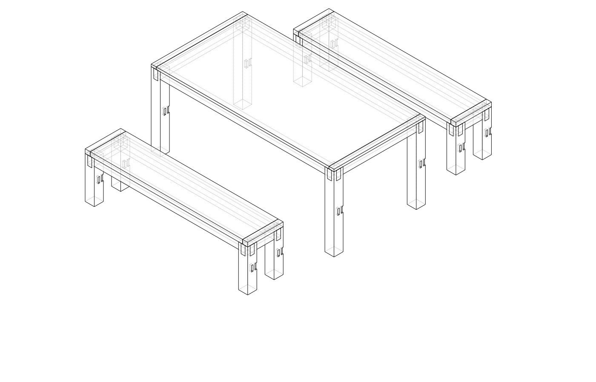
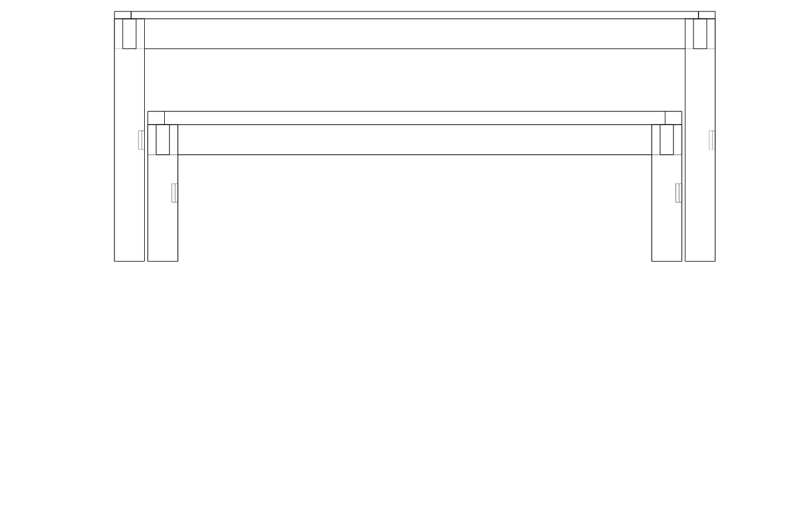
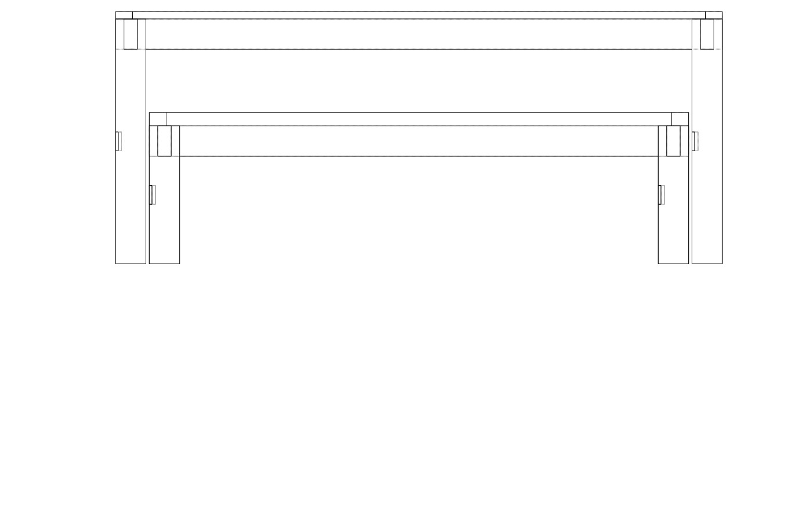
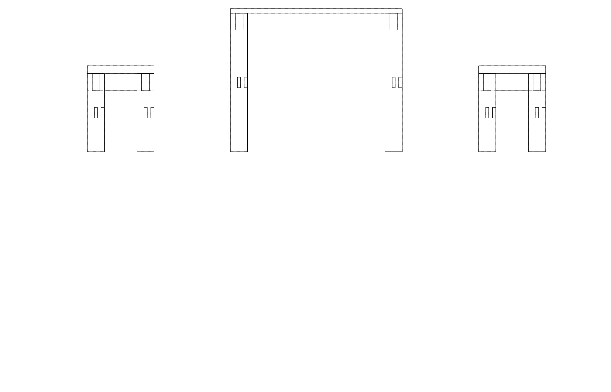
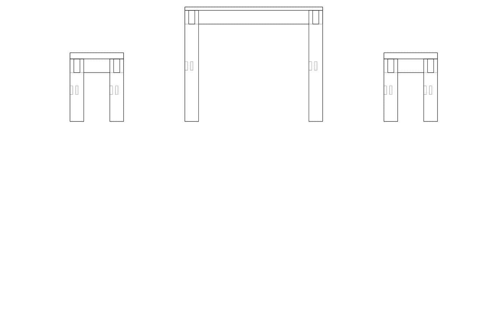
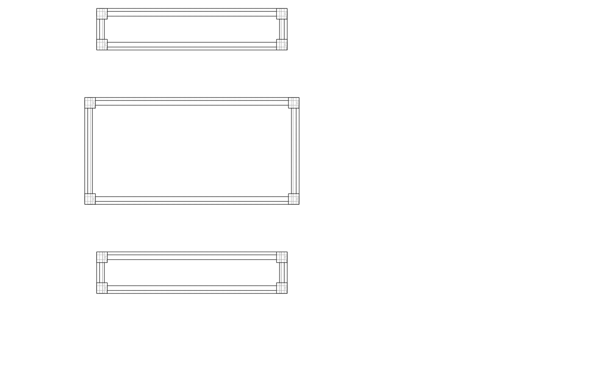

| Item | Qty | Unit | Unit price | Subtotal |
|---|---|---|---|---|
| Hardwood 90x90mm × 780mm (table legs) | 4 | length | $38.00 | $152.00 |
| Hardwood 90x40mm × 1800mm (table long aprons) | 2 | length | $32.00 | $64.00 |
| Hardwood 90x40mm × 900mm (table short aprons) | 2 | length | $18.00 | $36.00 |
| Hardwood solid board 200x25mm × 1800mm (tabletop) | 5 | length | $55.00 | $275.00 |
| Hardwood 50x50mm × 480mm (bench legs) | 8 | length | $14.00 | $112.00 |
| Hardwood 90x40mm × 1600mm (bench long aprons) | 4 | length | $28.00 | $112.00 |
| Hardwood 90x40mm × 350mm (bench short aprons) | 4 | length | $10.00 | $40.00 |
| Hardwood solid board 140x40mm × 1600mm (bench seats) | 6 | length | $42.00 | $252.00 |
| Breadboard end stock 50x25mm | 6 | length | $8.00 | $48.00 |
| Exterior PVA glue 1L | 2 | bottle | $14.00 | $28.00 |
| Wooden buttons / pocket screws (top fixing) | 2 | pack | $9.00 | $18.00 |
| Stainless screws assorted | 2 | box | $12.00 | $24.00 |
| Outdoor oil finish 1L | 2 | tin | $42.00 | $84.00 |
| Pipe clamps × 4 (hire or buy) | 4 | piece | $22.00 | $88.00 |
| Total | $1,333.00 | |||
| Part | Qty | L (mm) | W (mm) | T (mm) | Notes |
|---|---|---|---|---|---|
| Leg | 4 | 728 | 90 | 90 | TABLE_H − TOP_T |
| Long apron | 2 | 1800 | 90 | 40 | Full outer width; tenons on ends |
| Short apron | 2 | 900 | 90 | 40 | Full outer depth |
| Top board | 5 | 1700 | 160 | 22 | Edge-joined; net 800 mm wide |
| Breadboard end | 2 | 900 | 50 | 22 | Cross-grain |
| Part | Qty | L (mm) | W (mm) | T (mm) | Notes |
|---|---|---|---|---|---|
| Leg | 4 | 410 | 50 | 50 | BENCH_H − SEAT_T |
| Long apron | 2 | 1600 | 90 | 40 | |
| Short apron | 2 | 350 | 90 | 40 | |
| Seat board | 3 | 1500 | 100 | 40 | Edge-joined; net 300 mm wide |
| Breadboard end | 2 | 350 | 50 | 40 |
Work order: benches first, then table. Benches use the same joinery at a smaller, more forgiving scale.
Mill all parts — Face and edge all stock. Cut legs to exact length. Mark a reference face and edge on each leg.
Lay out mortises — On the inner face of each leg, mark two mortises: 15 mm wide × 55 mm tall, centred on apron height (90 mm), positioned flush with the top of the leg. Mark all 8 bench legs before cutting any.
Chop or rout mortises — Chop in stages with mortise chisel, working from each end toward the middle. Or rout with a straight bit and MDF template. Clean walls and square corners. Depth: 17 mm (tenon thickness + 2 mm clearance).
Cut tenons — Mark tenon shoulders at 50 mm from each apron end (= leg width). Tenon: 15 mm thick × 55 mm tall, centred on apron. Saw cheeks with tenon saw; saw shoulders; pare with shoulder plane until tenon enters mortise with firm hand pressure.
Dry-fit each bench end frame — Front leg + rear leg + short apron. All shoulders must contact the leg face. Check for square.
Glue up end frames — Apply PVA to mortise walls and tenon faces. Clamp across the frame with a bar clamp. Measure diagonals; adjust with clamp angle if out of square. Let cure overnight.
Connect end frames with long aprons — Glue and clamp the two long aprons between the end frames. Clamp across bench length. Check for twist (sight along length — all four legs should contact a flat surface simultaneously).
Glue up seat panel — Prepare and edge-joint three seat boards. Glue with cauls; cure overnight. Flatten, trim to size.
Fit breadboard ends — Glue and pin at centre only; slot outer fixings.
Fix seat to frame with wooden buttons — Rout 5 mm groove on apron inner top edge; cut and screw buttons.
Repeat steps 1–7 at table scale — Mortises 15 mm wide × 55 mm tall in 90 × 90 legs; tenons same profile. Table short aprons are only 900 mm so still manageable.
Glue up tabletop — 5 boards × 160 mm = 800 mm net width. Use 4 pipe clamps alternating top and bottom to prevent bowing; cauls between clamps and boards. Apply PVA to edges only (not face). Cure overnight.
Flatten top — Scrape glue lines flush with a cabinet scraper. Belt sand at 45° to grain then with grain, through 80 → 120 grit. Hand plane any remaining ridges.
Trim to final size — Track saw or circular saw with guide to square and trim the panel to 1700 mm × 800 mm before breadboards.
Fit breadboard ends — Centre hole: 10 mm round tenon or loose spline, glued; outer two holes: 8 mm slots routed in breadboard, screws not glued. Allows up to ±5 mm movement.
Fix top to table frame — Same button method as benches; rout groove in aprons.
Sand and finish entire set — Sand through 120 → 180 grit. Apply 2–3 coats outdoor oil, wiping off excess each time. Allow 24 h between coats. Pay special attention to end grain (apply double).